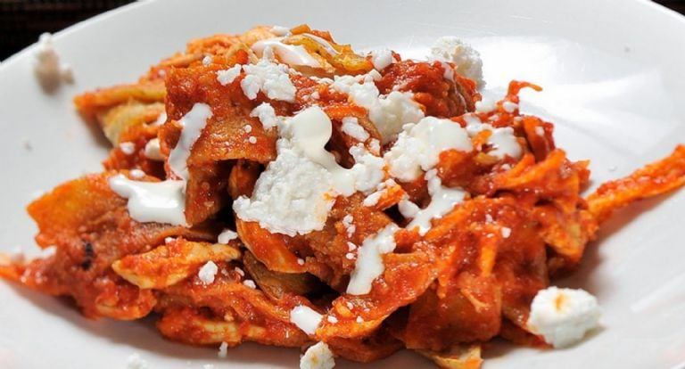
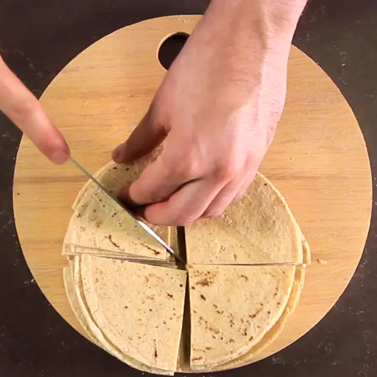

Si usas totopos de bolsa de supermercado, no te serviran. Necesitas tortillas cortadas en triángulos y dejadas al aire para que pierdan humedad. Asi como esta en la imagen

Nota importante: Tu platillo puede variar dependiendo de los ingredientes, la imagen solo es con fines ilustrativos
=== Proyecto hecho el 4 de abril de 2026 por Marcos T. S. ===